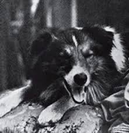

EL ARTE DE ACTUAR
El cine nació el 28 de diciembre de 1895, cuando los hermanos Lumière proyectaron las primeras películas en el Salón Indio del Gran Café de París.
La primera industria cinematográfica de Estados Unidos se desarrolló en la costa este, con Nueva York como capital.
Hollywood se estableció en California por el buen clima, los terrenos baratos y la diversidad de paisajes.
CINE Y CURIOSIDADES
La primera gala de los premios Goya se celebró en 1987 en el Teatro Lope de Vega de Madrid.
El plano secuencia más largo del cine es el de la película Victoria, que se rodó en una sola toma de 134 minutos.
Hollywood se estableció en California por el buen clima, los terrenos baratos y la diversidad de paisajes.

Thomas Edison monopolizó el cine al comprar las patentes de las tecnologías necesarias para producir y exhibir películas.

La primera estrella canina del cine fue Blair, cuyo nombre artístico era Rover.
Blair apareció por primera vez en una película (aunque brevemente) en 1903 (Alicia en el país de las maravillas) y, posteriormente, en 1905, tuvo el papel principal en Rescued by Rover.
